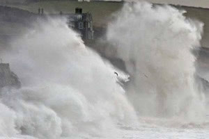
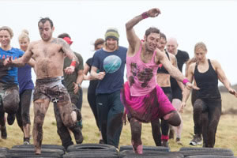

Winter Storms hit Sennen Cove
Sunday, 9th of February, 2014
Sennen Cove has been battered by the stormy Atlantic all winter. Upto 35ft waves have been breaking into the cliffs. Thankfully there has been no local loss of life.
{kind=link}
Storm watchers were seen getting soaked as the waves hit the sea wall and car park in the village. Thankfully there was only minor damage was caused to the town.
Amber Alert
On friday the met office issued an amber wind warning for much of the South West.
- Amber wind alert
- Yellow general alert
- 35ft waves predicted
Other news
Spear Gun Fishing
Community Discussion
There have been a few sightings of spear gun fishing around Sennens shores. We ask for your views
Dogs on the beach
Community Discussion
The Sennen Beach dog ban between Easter and September has been inplace for nearly 2 years. Is this being followed bay all or are some not sticking to the rules?
{kind=link}
Eyewitness
As I left the car park and walked towards the beach I saw a massive wave hurtle around the corner towards the lifeguard hut. My jaw quite literally dropped. The waves were massive, the sound of them crashing was like thunder and the spray created was insane.
Amanda Brooks - 9th Feb 2014
Related News
Red Bull Storm Chase
The recent storms brought the Red Bull Storm Chasers to Sennen Bay. The group of pro windsurfers battled the 80mph gusts to compete in the series.
{kind=link}
Sennen Cove during the storms
This video captures some of the fierce waves to pound Cornwall on Saturday. Watch out for the giant waves striking the headland behind Sennen Cove.
News from the web
Storm footage on YouTube
Friday, 14th February, 2014
Amatuer footage shows the enormous waves hitting Sennen, catapulting 200ft into the air. The swell coming in from the Atlantic hits the cliffs and flies over the lifeboathouse.
Source: Mail Online (via YouTube)
Are you tough enough?
Tuesday, 4th March, 2014
Some of Penwith’s most adventurous souls are gearing up for the UK’s ultimate obstacle endurance event.Tuff Enuff features 30 gruelling obstacles over a 12km course designed by Royal Marines.
Source: This is Cornwall
Lisa Lucas Art Exhibition
Thursday, 6th March, 2014
Lisa Lucas, a local artist, will be exhibiting her work at The Morvah Schoolhouse Gallery as their featured artist for March. The newly refurbished café space will host the "Hope Springs Eternal" exhibition.
Source: This is Cornwall